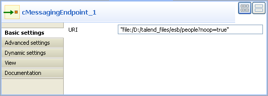
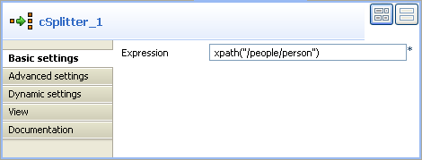
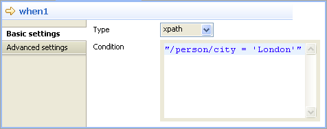
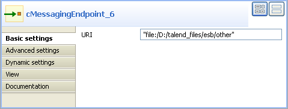

Component Family | Routing | |
Function | cSplitter splits a message into several submessages according to a condition. | |
Purpose | cSplitter separates multiple elements of a message so that they can be handled and treated differently in individual routes | |
Basic settings | Language | Select the language of the expression you use to split your messages. |
| Expression | Type in the expression to use to split the messages. |
Usage | cSplitter is used as a middle component in a Route. | |
Limitation | n/a | |
In this scenario, a file message is sent from an endpoint and its content is split according to an expression. The split content is then routed to different endpoints according to the defined conditions.
Here's an extract of the XML file used:
<people> <person id="8"> <firstName>Ellen</firstName> <lastName>Ripley</lastName> <city>Washington</city> </person> </people>
This use case requires one cSplitter component, one cMessageRouter component and seven cMessagingEndpoint components.
From the Palette, expand the Messaging folder and select the cMessagingEndpoint component. Drop one as input and six as output onto the design workspace as shown above.
Expand the Routing folder. Select the cSplitter component and drop it onto the design workspace, between the input component and the output ones.
Select the cMessageRouter component from the Routing folder and drop it onto the design workspace, between the cSplitter and the output components.
Right-click the cMessagingEndpoint component on the left, select Row > Route from the contextual menu and click the cSplitter component.
Right-click the cSplitter component, select Row > Split from the contextual menu and click the cMessageRouter component.
Use a Row > Route connection to link the cMessageRouter to the cMessagingEndpoint component at the bottom (cMessagingEndpoint_7 in the figure).
Right-click the cMessageRouter component, select Trigger > When from the contextual menu and click the first output cMessagingEndpoint component on the top (cMessagingEndpoint_2 in the figure).
Repeat this operation to connect the cMessageRouter component to the next three output cMessagingEndpoint components (cMessagingEndpoint_3 through cMessagingEndpoint_5 in the figure).
Right-click the cMessageRouter component, select Trigger > Otherwise in the contextual menu and click the last output cMessagingEndpoint component (cMessagingEndpoint_6 in the figure).
Double-click the input cMessagingEndpoint component to display its Component view, and type in the URI of the messages you want to route in the URI field.
As we are handling a file message, type in "file:/" followed by the path to the folder containing the files to send, with the noop file specific option. This option tells Camel to leave the file as is, instead of moving it from its original folder.
Double-click the cSplitter component to display its Component view, and set an Xpath expression in the Expression field to split the message into several messages at each person node of the XML file.
In the design workspace, click the first When route link and click the Component view to set the condition to match the message to route to the connected endpoint.
In the Type list, select the language of the expression you want to use to route the message. Select Xpath in this scenario.
In the Condition field, specify which split content will be sent to the connected endpoint.
Here we retrieve the person node for which the city node is defined as London. The people based in London will be retrieved.
Repeat this operation on the rest When connections for other cities, for example, Paris, Beijing, Washington, etc.
Then, the cMessageRouter component will route the split messages to different endpoints according to conditions defined in its different When connections.
In the Otherwise connection of cMessageRouter, camel will send all data/messages that does not match the condition defined in the different When route links.
Double-click the first output cMessagingEndpoint component to display its Component view, and type in the URI in the URI field for routing your message.
Here, we are handling a file message, so type in "file:/" followed by the path to the folder to which the files will be routed. In this endpoint, you want to retrieve the split messages matching the city of London, so it will send the files to a folder named london.

Repeat this operation to define folders for the other output cMessagingEndpoint components linked with the cMessageRouter component via a When connection, for example, a paris folder for the Paris conditioned When connection, etc.
Double-click the endpoint component linked to the Otherwise connection to display its Component view, and type in the URI in the URI field for the destination of your message.
Here, we are handling file messages, so type in "file:/" followed by the path to the folder to which the files will be routed. This endpoint will retrieve all the split messages not matching the filters defined in the When connections of the cMessageRouter to a folder named other.
Double-click the endpoint component linked with the cMessageRouter component via a route connection to display its Component view, and type in the URI in the URI field for the destination of your messages.
Here, we are handling file messages, so type in "file:/" followed by the path to the folder to which the files will be routed. As the route connection is used to pass all the messages from its source, this endpoint will retrieve all of the split messages regardless of the conditions specified in the When connections.

Press Ctrl+S to save your Route.
Click the Code tab at the bottom of the design workspace to have a look at the generated code.

In the code, the message is split according to the condition
.split, routed according to a condition.choice(), and sent to different defined endpoints (.to) according to.whenfilters. Messages not matching the conditions are retrieved by the.otherwisecode and the original route is continued by the.endcode.Click the Run view to display it and click the Run button to launch the execution of your Route. You can also press F6 to execute it.
RESULT: New files are created in the newly created city folders based on the cities, unmatched files are retrieved in a folder, and all the messages of the original route before the message routing are retrieved in another folder.